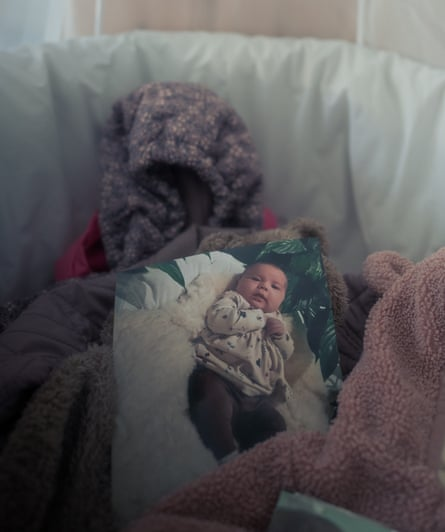
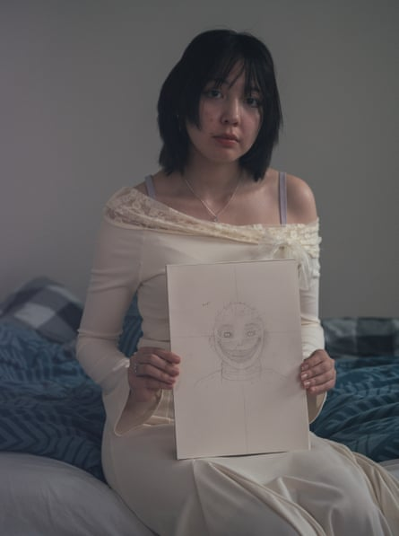
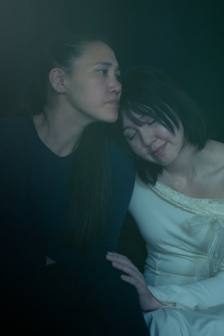
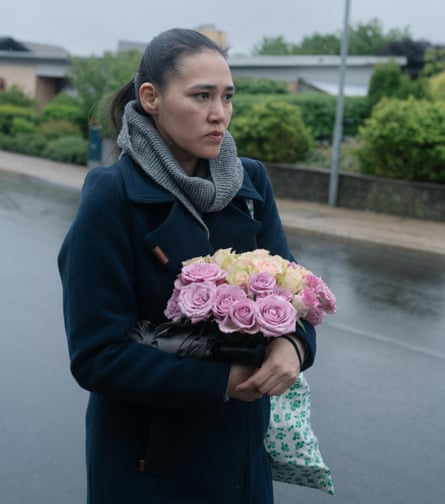
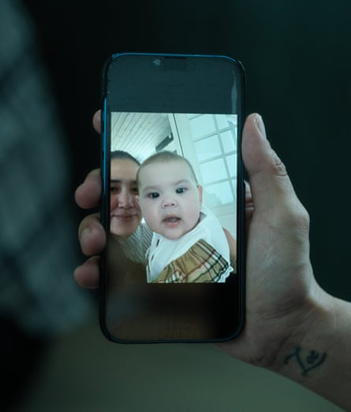

‘N ow your two hours begin.” The countdown started when Keira Alexandra Kronvold had just given birth in the early hours of 7 November 2024. Keira, 38, was originally granted just one hour with her daughter, Zammi, before her baby was to be removed from her and taken to foster parents – but the midwife begged authorities to give them more time. Before Zammi’s arrival, the midwife asked if Keira had any wishes. “I said, ‘I want hand and footprints. I want to grab her, I don’t want you to catch her when she is born. I want to catch her myself.’”
During labour – which lasted just an hour and a half – Keira kept checking whether her 20-year-old daughter, Zoe, who had never seen a birth before, was OK; and she was determined not to scream, to avoid waking up the other mothers and babies on the ward. But when Zammi arrived, everything else – the months of stress, worry and pressure – gave way to pure joy. “I just laid back,” she says, arms cradled and slowly reclining on her sofa, as she re-enacts the moment at home in the town of Thisted, northern Denmark , “because I had to keep her warm. She was so beautiful. That emotional feeling is indescribable. Right there: unconditional love, pure happiness, all that joy.” She wished Zammi a happy birthday and told her how much she loved her. She cried tears of joy, counted Zammi’s tiny fingers.
And then the mood shifted. “It feels like you come into the darkness,” says Keira, her body frozen. “Now I have to count the minutes. That pure joy was gone. And that moment I felt I could show my emotions.” She started to breastfeed Zammi. Even letting go for the midwife to do her checks was torturous.
A photograph of Zammi sits in the cradle that Keira had prepared for her
An hour passed. She was told she needed to start preparing to hand her daughter over. Keira talks about the contents of the bag she had prepared for Zammi. Seven months on, Keira can still see all the objects before her: bottle, dummy, warm clothes, blanket, shampoo, lotion. “I gave her a diaper, I put her clothes on,” says Keira, “and the woman came in.” She cries as she remembers. “I had to make sure my tears didn’t fall on my daughter’s face. Zoe held her for a couple of minutes. I remember every small detail about her.”
Zammi had a tiny nose, says Keira with a laugh, and she remembers her facial expressions. She had black hair and blue eyes when she was born. Her hands, says Keira, were like Zoe’s, and her feet were definitely those of Zammi’s father. She had a heart-shaped birthmark where her chest meets her neck and another birthmark on the inside of her little finger. When she made noises, Keira was overcome by the beauty of her voice. “There was a huge connection,” she says. “When she looked at me while breastfeeding and she closed her eyes, she felt so safe.”
A woman came to collect the baby from hospital. After handing over the bag, Keira kissed Zammi. “I made a promise that I was going to fight for her,” she says. “I promised her I would send her flowers every week. I promised her that she will come home soon.” After Zammi was taken away, Keira lay on the bed for a long time crying, her body shaking while the midwife gave her stitches. The midwife invited Keira to stay the night in hospital, but she couldn’t bear to. So she went home alone, with just a box containing her placenta, congratulations messages pouring in from well-wishers, who did not know Keira would be forced to part from her baby so quickly , while at the opposite end of town Zammi, still just hours old, met her foster parents for the first time.
K eira is one of countless Greenlandic women in Denmark who have been separated from their children after undergoing highly controversial “parenting competency” tests (known as forældrekompetenceundersøgelse or FKU) used by social services to assess whether parents are suitable to care for their children. In common with many of these cases, Zammi was placed with Danish foster parents. Keira fears Zammi will lose her language and identity as a result. For years, parenting competency tests have been criticised by campaigners and human rights bodies that say they are culturally unsuitable for people from Inuit backgrounds, and therefore discriminatory.
Generally, the tests are used if a child is believed to be struggling with challenges in behaviour, feelings or thoughts – and will form one part of a social worker’s investigations, says clinical psychologist Isak C Nellemann, who used to perform FKU for the Danish state, and now helps advise families and lawyers in cases like Keira’s. But, often, he says, simply being Greenlandic will be enough to get the attention of social workers.
The tests cover attachment, personality traits, cognitive abilities and psychopathology, and take about 15-20 hours. It is almost impossible to pass them, says Nellemann; even he and his colleagues have failed to do so. Questions can include “What is glass made of?” and “What is the name of the big staircase in Rome?” Nellemann argues that the tests are culturally specific and a poor way to measure innate intelligence. “There is a lot of stigmatisation of people from Greenland,” he says. “We don’t know why we should use these tests for parenting.”
He even goes so far as to compare the tests to a tool of fascism. “You take only one kind of people as the ‘real’ ones. We only choose the white, or ‘real’, Danish people.”
Children with Greenlandic parents living in Denmark are significantly more likely to be placed into care than those with Danish parents. A 2022 report found that 5.6% were removed compared with 1% of those with a Danish background . Louise Holck, the director of the Danish Institute for Human Rights, has said the FKU tests “fail to account for potential language barriers or cultural differences”.
Until 1953, Greenland was ruled by Denmark as a colony. Now the territory is part of the Danish kingdom, with Copenhagen controlling its foreign and security policy. In recent years, there have been multiple scandals about historic and more recent population-control practices that have been described by many in Greenland, including the former prime minister, as a genocide. These include the IUD scandal , in which 4,500 women and girls were fitted with contraception without their knowledge or consent between 1966 and 1970. Many of the details have only recently come to light.
Keira, who has three children, all of whom have been removed from her, was subjected to an FKU test in 2014 that is understood to have contributed to the removal of Zoe, who was then nine, and Keira’s son, Nolan, who was just eight months old and breastfeeding; he is now 11. Nolan, whom Keira sees twice a week, now lives with his father. Keira was given another test last year that contributed to the removal of Zammi. When she was given the most recent test, she says she was told it was to see if she was “civilised enough”. The two assessments, 10 years apart, were made by the same Danish-speaking psychologist, who was also Keira’s therapist. Keira’s first language is Kalaallisut (West Greenlandic). She is not fluent in Danish.
From left: Keira’s daughter, Zoe, who was taken from her mother aged nine, pictured with a drawing of one of her hallucinations.
Keira’s lawyer, Jeanette Gjørret, who specialises in children’s rights, says there were “many errors in the case, including in the psychological tests”. She did not have a translator for either test, and the case for Zammi’s removal rested heavily on the cases of her first two children, in which there were also errors. “The decision was taken before Zammi was born, and Keira was not given the opportunity to live in supported accommodation in order to keep her baby, which she would have been prepared to do if necessary. In Keira’s case, the removal of all three of her children has been largely down to the viewpoint of one person,” Gjørret adds. She did not have legal representation or advice while the assessments were made.
The 2024 FKU assessment, conducted just over a month before Zammi was born, concluded that although “Keira sincerely wants to bring her little daughter home” and “the child is growing and thriving [in the womb]”, Keira’s personality had “not developed sufficiently” and that “difficulties may arise regarding linguistic and cognitive stimulation of the young child”.
It added: “Keira states that it is common in Greenlandic culture that even small facial features have communicative significance … but Zammi will grow up in Denmark and will be dependent on being able to read the social contexts she will be involved in – and therefore needs to learn this in order to be able to cope in social relationships with peers.” To have her baby returned to her, she would have to work on multiple areas and “show development” – including “expressing herself in Danish”, becoming “more nuanced in her approach to herself and her surroundings” and being “able to express herself with clearer facial expressions”.

Zammi’s empty cot.
Although Danish authorities consider Zammi’s removal to be legal because a court has issued a judgment in the case, Gjørret does not agree. “It is my assessment that Zammi should not have been placed with foster parents,” she says.
Having unsuccessfully fought the case in Holstebro court of appeal in April, they have applied to take it to the high court, which, if successful, could have far-reaching consequences for Greenlandic victims of the tests. She has requested that the high court overturn the decision “in its entirety” on the basis of the Institute for Human Rights’ findings and a new law, which came into force in May, banning the use of FKU on Greenlandic people. She is still waiting for a decision.
Despite the ban, parenting competency tests are still being used by municipalities as evidence against Greenlandic parents at the National Social Appeals Board, Gjørret says. The Ministry of Social Affairs and Housing denies this, saying that “Since May 1, 2025, the National Social Appeals Board has not used standardised psychological tests for decisions on placement of a child from a Greenlandic family in care outside the home.”
Things could be about to change. Laila Bertelsen, the founder of Foreningen Mapi, an association that helps Inuit parents in Denmark, says she is aware of one mother whose separation from her children has been reversed since the change of law. Often, she says, cultural differences – language, family life and upbringing – are misinterpreted by Danish studies and professional assessments. “This means that the children are not only removed physically, but also cut free from their cultural roots and identity.” Forced removal at birth should only be done in “extremely urgent situations, where there is a documented danger”, she says. In all other cases, families should instead be given support, attachment and togetherness. “Not only for the child’s safety, but for the child’s self-understanding and identity formation.”
Y ou can feel the empty cot in Keira’s apartment before you see it. An absence radiates from the unoccupied bassinet, lovingly draped with sheer fabric. A bee and a dragonfly hang down from a mobile. Next to it, a little car seat and a baby bouncer lie in wait.
Then you see the tiny nappies, lined up on the changing station alongside a fresh bottle of baby lotion and cotton wool. On the windowsill lies a worn copy of the Danish attachment parenting book Den Bedste Start på Livet (The Best Start to Life). But perhaps it is the cupboard full of newborn clothes folded in neat piles that most bluntly reveals that no baby has ever lived there.
For seven months, Keira’s home in Thisted, a market town on the Limfjorden strait in the north-west corner of Denmark, has waited for Zammi to come home. Keira is allowed to visit her youngest daughter once a week for exactly one hour on a Friday morning. Zoe and Nolan are only allowed to see their baby sister once a month. Keira, who works in a fish factory, spends the week counting down to Friday at 10.30am.
She struggles to sleep and finds it difficult to eat. “I ask many people, ‘Please pray for my daughter or I can’t sleep.’ Nights can be for ever . I count days.” She pauses. “In the beginning, I counted hours.”
When she first went back to work, 10 weeks after Zammi was born, she was still struggling to stand for long periods, and at times had to hide in the toilet to cry. She has spent the last decade fighting to be reunited with her older children, and now Zammi, and yet she finds the strength to keep going. “It’s like I’m living by my will,” she says. She tries to stay positive by working on strategies to get her baby back, and is recording her experiences for a book. “I am thinking, ‘What is the next step? What should I do?’ But as soon as I see her bed, I crumble.”
Keira and Zoe at home in Thisted.
Keira separated from Zammi’s father, who is Danish, when she was four months pregnant, but says he remains an active part of hers and Zammi’s lives. He has not spoken out publicly. “He loves his daughter,” she says. “But he is scared that the world will judge him.” She believes her former partner fears the shame, mental toll and pressure of becoming a public figure would be too much.
Keira first spoke out on the night she came home from hospital. Unable to handle all the questions about what was going on, she decided to explain her situation on Facebook. She didn’t look at it for a couple of days, but when she did, her video had gone viral. She had hundreds of messages from people expressing sympathy and giving their condolences. “I was so touched by it,” she says. “I thought, ‘People are hearing my voice.’ That’s what gave me motivation to fight back.” While Keira’s case is one of many, the vast majority of people who have their children taken away do not have the strength to go public.
Protests over Keira’s case took place in Copenhagen and Nuuk, and with Danish-Greenlandic relations under a global spotlight after Donald Trump’s threats to take control of the territory , the campaign started to get political traction. Keira attended one of the demonstrations 32 days after giving birth, when she was still bleeding and struggling with milk production. In January, the FKU testing ban was announced by the Danish government. How did Keira find the courage to speak out? “I say to myself, if I don’t do it, nobody will. I don’t care if somebody judges me. I know if I change something now, I will change something for Zammi.”
Keira grew up in Qeqertaq, a small village in western Greenland, with her mother, who has recently died, and father, who has retired after many years as the director of a fish factory. She is still close to him and most of her five siblings, who are “heartbroken” about her separation from Zammi. Keira has happy childhood memories of driving the dog sleigh and hunting with her father. Every year, the family would spend three months living in nature. She gave birth to Zoe in Greenland and later moved to Denmark with a plan to study massage therapy.
For Zoe, who sits quietly in Keira’s living room as we talk, nothing can turn back the clock. After being removed from her mother at nine, she spent the rest of her childhood with a foster family and in children’s homes, and says she was the victim of emotional abuse. But she is determined to get justice for her sister, who she hopes will be reunited with their mother before her first birthday. During the court hearing in April, she stood outside in silent protest with banners she had made from fabric, reading: “Please bring my little sister back home” and “FKU is only for Danish citizens”.
Speaking softly, she says that before she was forced to live with a foster family, she enjoyed school and was especially good at speaking English, maths and playing chess. She hated getting up early in the morning and fondly remembers her mother, who is a morning person, plaiting her hair while she was still asleep.
Keira says social services suddenly began visiting after Zoe had started school, saying they wanted to check whether she was taking good enough care of her children. But what they really meant, she says, is “you have to do it in our way. Not your way.” Among the problems they had with doing things Keira’s way was that they spoke Greenlandic at home rather than Danish.
Keira on her way to visit Zammi. She is allowed to see her for one hour every Friday
Having grown up in a village where she says “everybody was a family member”, the state intervention she was subjected to in Denmark was alien and disconcerting. She was being regularly observed at home – including while making dinner, breastfeeding, taking a walk. If she spoke to her children in Greenlandic, she had to translate it to Danish for the social worker. What they deemed “mistakes” started to pile up, and they would bring them up months later. These, she says, could be anything from the way she spoke to Zoe at dinner to her not wanting her daughter to walk home alone from school when she was eight years old. “Nice and quiet, collecting your mistakes,” says Keira. “It was frightening, scary. I was always nervous. I always felt pressure.”
Zoe, who was recently diagnosed with schizophrenia, started experiencing hallucinations when she was with her foster family. At one point, Keira says softly, her daughter was suicidal. Zoe shows me some recent drawings of the faces that she sees. One of the figures represents a person who was responsible for looking after her when she was removed from her mother.
When Keira became pregnant with Zammi, she decided to inform Thisted municipality in the hope of working together to ensure she could keep her once she was born. She was nervous going to the doctor, because she says she had previously been given the ultimatum either to have an abortion or face the baby being taken away after the birth. She agreed to undergo another parenting competency test in an attempt to cooperate. But in the session, the psychologist brought up her previous abortions and asked her to show her parenting skills by playing, singing and talking with a doll, checking whether she made eye contact. “The problem is, I didn’t grow up with a doll,” she says, adding that her real baby, Zammi, was busy kicking in her stomach. “They made me draw and they were criticising it, that I didn’t draw a face. I drew a mum and baby.”
She first heard the municipality was planning to remove Zammi from her during her eight-month scan. One minute she was talking to her, laughing, watching her kick. The next, she says, the doctor or nurse told her: “Well, it looks like they chose to take the baby.” She was incredulous. “It felt like the whole world was crashing down. I thought, should I travel to another country? I don’t have any money.” When she called the municipality, she says they claimed ignorance, but it later turned out to be true.
A photograph of Keira and Zammi taken during one of Keira’s weekly visits
According to observation notes of Zammi, shared with me by Keira, her daughter has shown signs of upset after her mother’s visits. “After the interaction was over, she became very distant,” says an observation from February. “She showed no interest in interacting with foster parents or toys.”
Lars Sloth, director of Thisted’s child and family administration, declined to comment on Keira’s case directly, citing a duty of confidentiality. But he acknowleged that in general the change in the law meant that Greenlandic cases should be reprocessed without the use of FKU. Gjørret says there is no reason why Keira cannot take care of Zammi, describing her as “very strong and independent”. Despite all that she has been through with her children, she says she continues to fight for them, holds down a job, and does not drink or take drugs. “I cannot find any reason why she cannot be a mother.”
A spokesperson for the Danish ministry of social affairs and housing said that the decision to place a child or young person in care outside the home is made by the municipal council, and that any placements made before the change in the law could be appealed. “ Municipalities are no longer allowed to use standardised psychological tests as part of the child protection examination when making decisions about placing a child from a Greenlandic family in out-of-home-care. Instead, municipalities must use a special unit possessing expertise in Greenlandic language and culture affairs, unless the family does not consent to the use of the special unit.
“The municipal council is also obligated to request that the specialised unit review all ongoing placements where standardised psychological tests have been used or must be assumed to have been used in connection with decisions about placing a child from a Greenlandic family.”
O n Friday morning, I walk through Keira’s open front door as rain falls in torrents outside, to find her sitting in her living room under soft fairy lights and the silently flickering television, arranging flowers. Every week she takes a different arrangement to Zammi so that she will associate them with her mother’s visits. This ceremonial act of devotion is part of how Keira survives.
She ties up her long dark hair and prepares to leave. Carrying an umbrella, she walks, almost in procession, through the town to see Zammi. When she reaches the suburban street where Zammi’s foster parents live – low-rise houses, neatly trimmed hedges, flagpoles in the front gardens – we part ways; she is not allowed to take visitors.
On her return, just over an hour later, Keira is upset that Zammi wasn’t wearing enough clothes and seemed cold, but she also appears to be nourished from spending time with her daughter. We sit in the car as she shows me pictures and videos. Zammi had done her special hello, where she put her hands on Keira’s cheeks, and she is at the stage where she loves looking at mirrors. In a video, Keira coos to Zammi in Greenlandic: “Hi little baby. Such a cute little baby. My little darling.” Time goes so fast when they are together. Sometimes she forgets to take pictures.
While she is there, she thinks only of Zammi. Her own feelings can wait till she gets home. It is always hard. Before she gets out of the car, she puts into words the pressure she is under. “It feels like somebody holding your throat. And they decide how much you can breathe.”